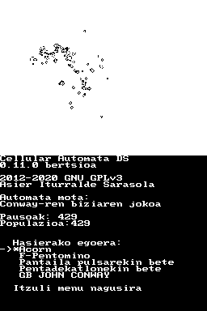
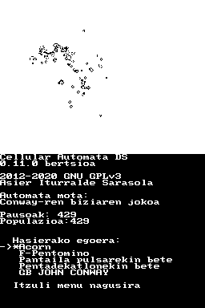

Pantaila-argazkiak
 


Cellular Automata DS eraikitzeko behar direnak
Jarraitu argibide hauek tresnak eta liburutegiak instalatzeko (nds-dev taldea).
Nola eraiki eta exekutatu Cellular Automata DS
Klonatu biltegi hau:
git clone https://gitlab.com/aldatsa/cellular-automata-ds.gitSartu proiektuaren direktoriora:
cd cellular-automata-dseta exekutatu ondorengoa:
makeKonpilatzen amaitzen duenean, kopiatu sortu den cellularautomatads.nds fitxategia zure SD txartelaren errora.
Garatzailea
Asier Iturralde Sarasola aldatsa.eus
Lizentzia
Cellular Automata DS software librea da eta GNU General Public License (GPL) version 3 lizentzia erabiliz banatzen da.